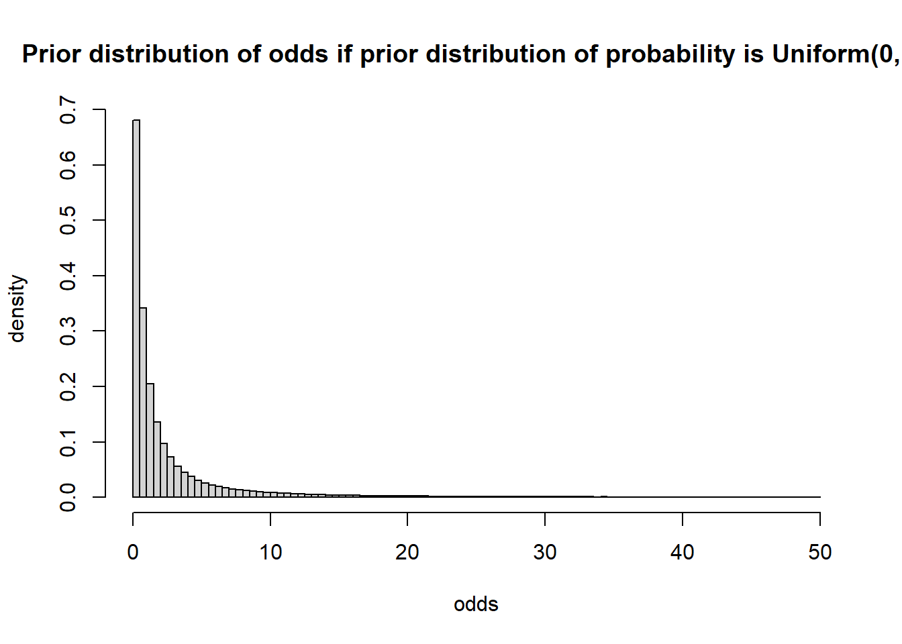
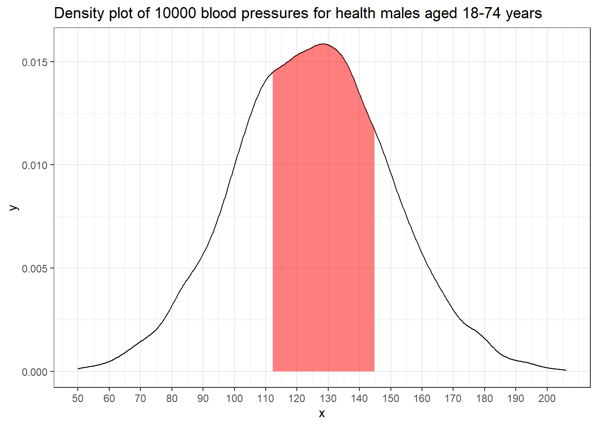
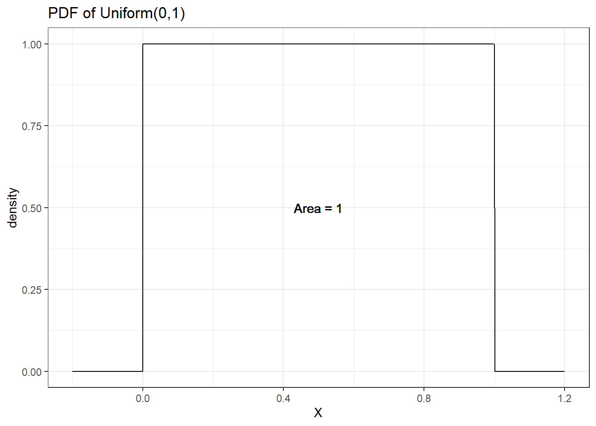
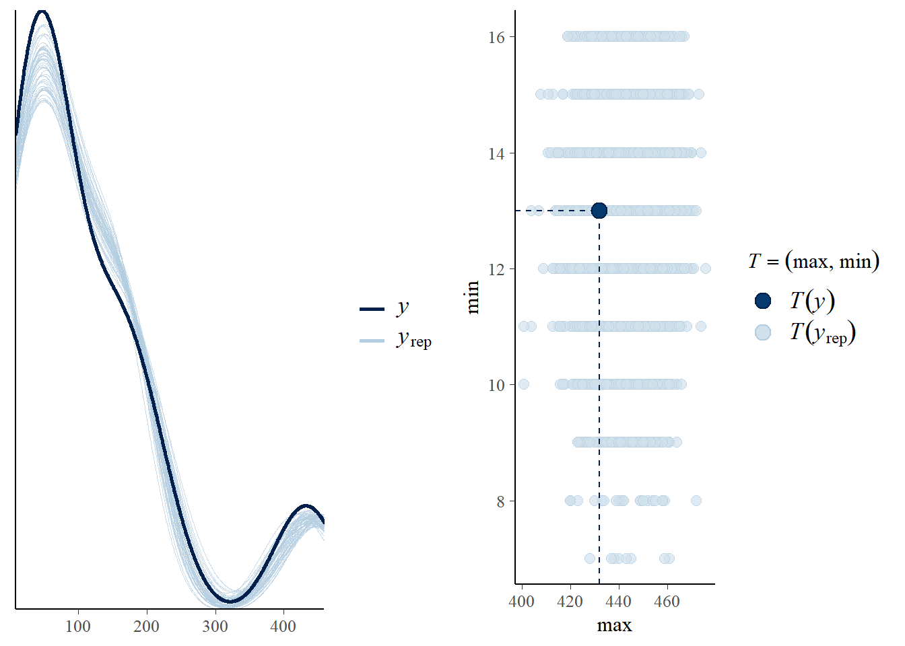
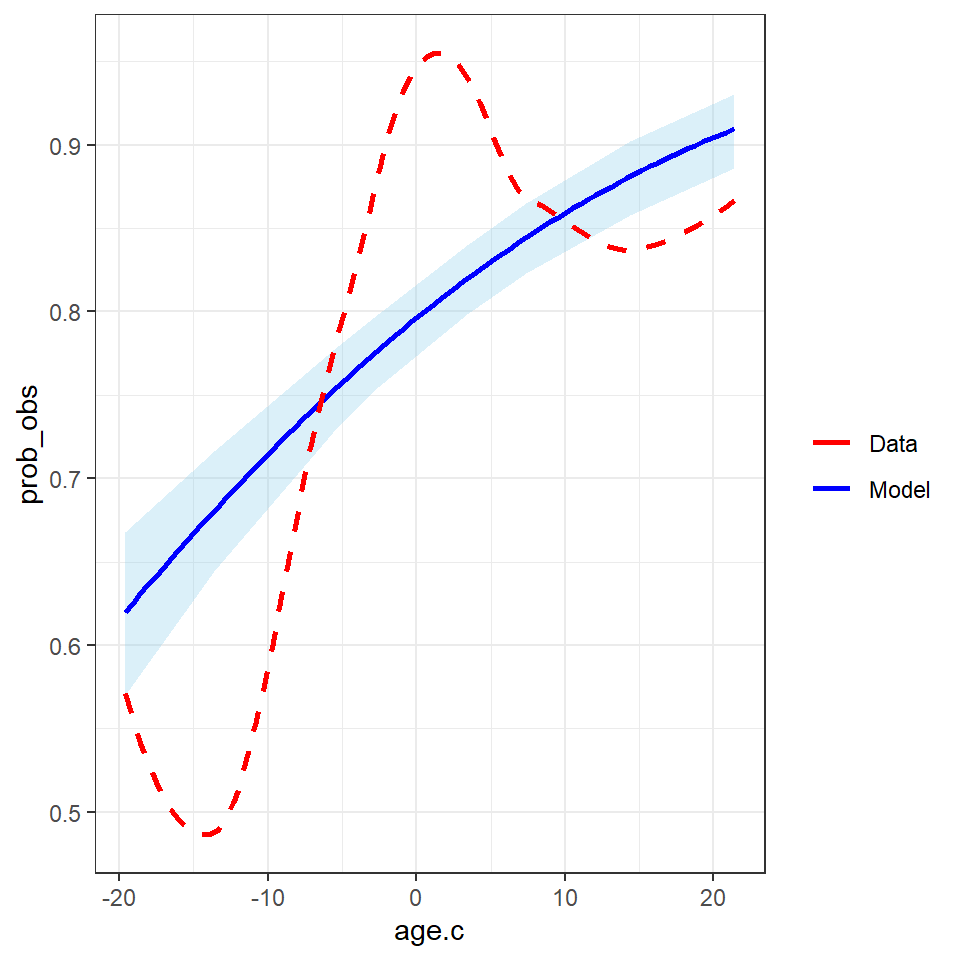
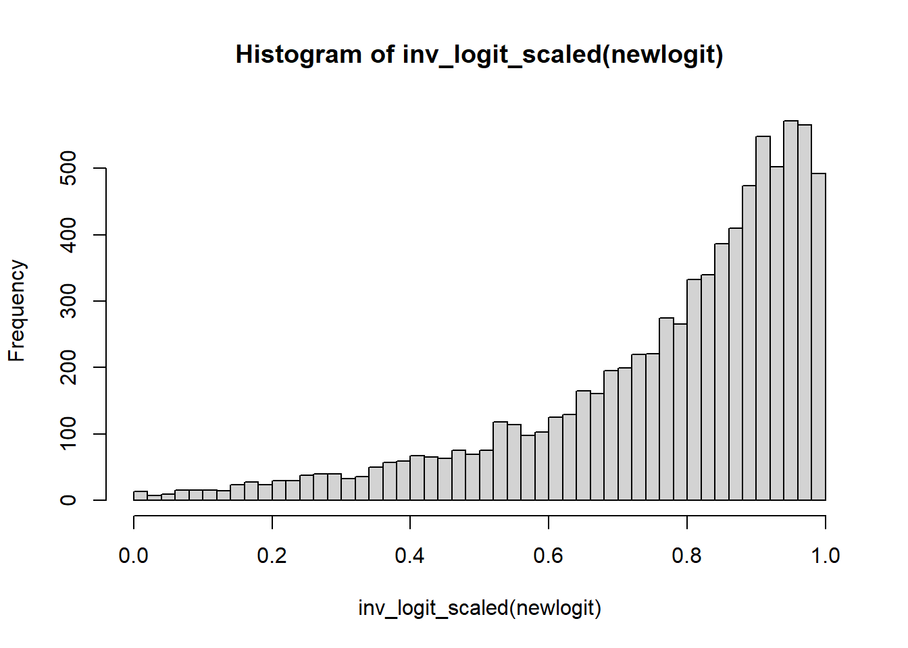
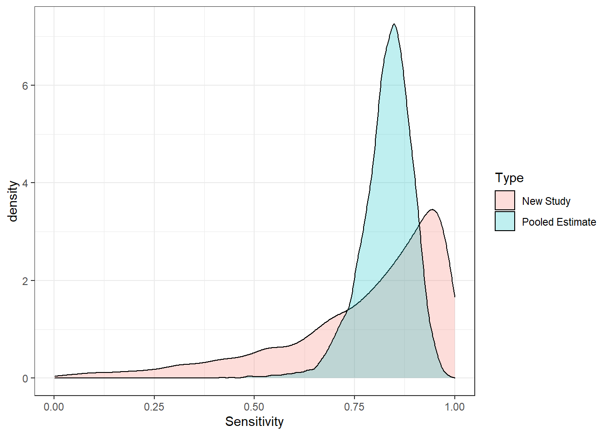
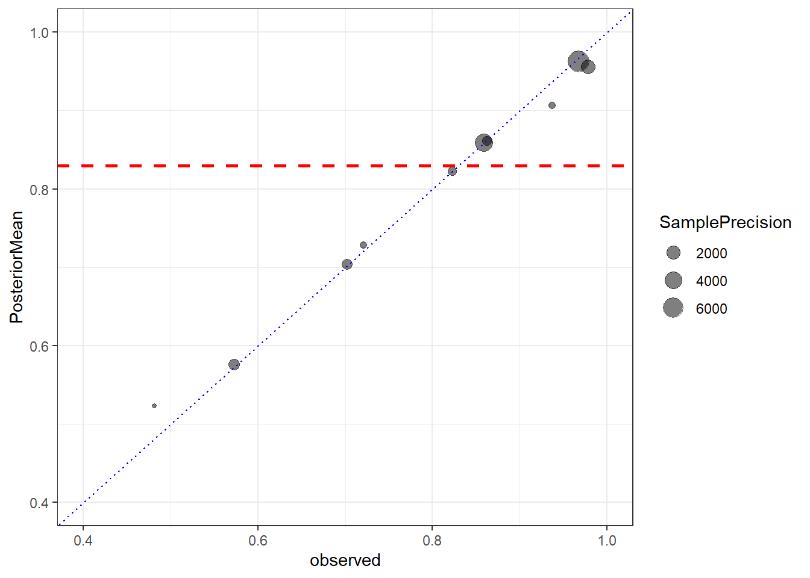

Session 7 Bayesian Regression II
- Learn how to fit and interpret Bayesian logistic regression
- Learn how to fit and interpret Bayesian poisson and negative binomial regression
- Reviewing hierarchical model: generalized mixed-effect models
7.1 Models for Binary Data
- For binary outcome Y, we are interested to model the probability of \(\pi_i = P(Y_i=1)\), \(i=1, \ldots, n\)
\[Y_i \mid \pi_i \sim Bern(\pi_i)\] \[ E(Y_i \mid \pi_i) = \pi_i\] \[logit( \pi_i) = \beta_0 + \beta_1 X_{i1}\]
logistic regression model featuring logit link that connects binary outcome to a conventional linear regression format, is part of the broader class of generalized linear models
Logit link convert probabilities to log odds.
\[\log(\frac{\pi_i}{1-\pi_i}) = \log(\frac{P(Y_i=1)}{1- P(Y_i=1)})\]
\[\log(\frac{\pi_i}{1-\pi_i}) = \beta_0 + \beta_1 X_{i1}\]

Logistic regression model
- Consider the logistic regression model \(Y\) with covariates \(X_i, \ldots, X_p\):
\[ \log(\frac{\pi_i}{1-\pi_i}) = \beta_0 + \beta_1 X_{i1} + \ldots + \beta_p X_{ip} \]
logistic regression coefficients is interpreted as log odds ratio!
Furthermore, we can recalculate probability using the inverse logit function (aka, expit function)
\[\pi_i = \frac{\exp(\beta_0 + \beta_1 X_{i1} + \ldots + \beta_1 X_{ip})}{1+\exp(\beta_0 + \beta_1 X_{i1} + \ldots + \beta_p X_{ip})}\]
- Assumptions of logistic regression models
- Independent observations. This assumption can be modified if working with clustered data.
- Linear relationship between continous covariates and log-odds We can check this assumption by examining marginal plots comparing the model predicted relationship between outcome (log-odds or logit-probability) and each continuous covariates.
- Multicollinearity Multicollinearity is the phenomenon when a number of the explanatory variables are strongly correlated.
- Correctly specified regression model This means that all relevant predictors for the response variable have been included in the model. This is often difficult to verify, but we can use posterior predictive distribution to check for regression fit. We can also use WAIC and LOO to compare different models.
- Comparing to linear regression model we no-longer require the residuals to be normally distributed and homoscedasticity.
Diagnostic Sensitivity Example
10 studies taken from (Bastos et al. 2020) on Diagnostic accuracy of serological tests for covid-19: systematic review and meta-analysis. BMJ. 2020
Each study reports observed positive chemiluminescent immunoassa (CLIA, \(r_i\)) and number having positive reference standard reverse transcriptase polymerase chain reaction (RT-PCR, \(n_i\))
Interest lies in summarizing this collection of values
Unpooled
- recall from last week, We can assume a binomial likelihood for each study (unpooled),
\[r_i \sim Bin(p_i, n_i) \]
we can assume that the 10 true sensitivities \(p_i\) are independent by fitting different prior to each one: \[p_i \sim Beta(1,1)\]
we will obtain 10 separate posteriors \(P(p_i \mid r_i, n_i)\)
- For example, we do not assume that \(p_1\) tells us anything about the value of \(p_2\)
Pooled
- Suppose we wanted to estimate the overall sensitivity of the CLIA test
- We do not want 10 separate estimates but a single estimate
- If we thought that the studies all had the same true sensitivity p0, we could fit a model like this:
- Assume a binomial likelihood for each study
\[r_i \sim Bin(p_i, n_i) \]
Assume that all studies have the same true sensitivity, \(p_0\): \[ p_i = p_0\]
Put a prior on \(p_0\): \(p_0 \sim Beta(1,1)\)
Different prior on \(p_0\)
The beta prior is useful for models with little additional structure
- e.g., estimating a single proportion; estimating a collection of proportions
It is difficult to use it to a model, where we want to include predictors of \(p_i\)
For most modelling approaches to binary data, we will use
- the logit transformation of \(p_i\)
- normal priors for parameters on this logit scale (e.g., normal prior for log-odds)
Logistic models
We still have the same likelihood \(r_i \sim Bin(p_i, n_i)\)
We define a new parameter using the logit transformation function:
\[logit(p_i) = log(\frac{p_i}{1-p_i}) = \alpha_i\] \[p_i = \frac{\exp(\alpha_i)}{1+\exp(\alpha_i)}\]
\(0<p_i<1 \Rightarrow -\infty < \alpha_i < \infty\)
Thus, it’s quite reasonable to use normal prior to characterize \(\alpha_i\)
1. Pooled model with non-informative prior
\[r_i \mid p_i, n_i \sim Bin(p_i, n_i)\] \[log(\frac{p_i}{1-p_i}) = \alpha\] \[\alpha \sim N(0, \sigma = 5)\]
fit1 <- brm(r | trials(n) ~ 1,
data = dat,
prior = prior(normal(0,5), class=Intercept),
family = binomial,
seed = 123)2. Unpooled model with non-informative prior
\[r_i \mid p_i, n_i \sim Bin(p_i, n_i)\] \[log(\frac{p_i}{1-p_i}) = \alpha + \beta_i \ \text{Study}_i\] \[\alpha \sim N(0, \sigma = 5)\] \[\beta_i \sim N(0, \sigma = 5)\]
fit2 <- brm(r | trials(n) ~ Study,
data = dat,
prior = c(prior(normal(0, 5), class = Intercept),
prior(normal(0, 5), class = b)),
family = binomial,
seed = 123)Generalized linear models
We can specify the type of model by two features - Family: type of outcome (binomial, normal, Poisson, gamma) - Link: relationship between mean parameter and predictor (identity, logic, log)
- we have models in the form
\[ Y_i \sim Dist(\mu_i, \tau)\] \[g(\mu_i) = \beta_0 + \beta_1 X_{i1} + \ldots + \beta_1 X_{ip}\]
\(g()\) is called the link function
Distributions family (exponential family) can be specified as Normal, Poisson, Binomial, Bernoulli, etc.
Usually, we use the logit for binary data and gets odds ratios (logistic model)
- If we use the log link, we can estimate relative risks
Sample from priors in brms
We can specify in brms to generate samples from our specified prior as part of the output
we can use these prior samples
- to compare with the posteriors to see how much the prior is updated by the data
- to check what information is in the prior
using the pooled model as an example
\[r_i \mid p_i, n_i \sim Bin(p_i, n_i)\] \[log(\frac{p_i}{1-p_i}) = \alpha\] \[\alpha \sim N(0, \sigma = 5)\]
fit1 <- brm(r | trials(n) ~ 1,
data = dat,
prior = prior(normal(0,5), class=Intercept),
family = binomial,
sample_prior = T, #asking brms to generate prior sample!
seed = 123)
# saveRDS(fit1, "data/chap8_binary_1")- checking posterior results
- computing posterior predicted probability of event (in this case the sensitivity of the CLIA test)
fit1 <- readRDS("data/chap8_binary_1")
#posterior draws of log-odds estimate - the intercept;
posterior <- posterior_samples(fit1)
#posterior predicted probability of event;
prob.pooled <- exp(posterior$b_Intercept)/(1+exp(posterior$b_Intercept))
mean(prob.pooled)## [1] 0.7910868quantile(prob.pooled, c(0.025, 0.975))## 2.5% 97.5%
## 0.7708342 0.8111113- what does the posterior output look like?
- comparing prior and posterior distribution visually
data.frame(Probability = c(inv_logit_scaled(posterior[,"b_Intercept"]),
inv_logit_scaled(posterior[,"prior_Intercept"])),
Type=rep(c("Posterior","Prior"),each=nrow(posterior))) %>%
ggplot(aes(x=Probability,fill=Type))+
geom_density(size=1,alpha=0.5)+
labs(title="Prior: alpha ~ N(0,5); probability = exp(alpha)/(1+exp(alpha))")+
theme_bw()+
scale_fill_manual(values=c("goldenrod","steelblue"))
7.1.1 Logistic regression with predictor
Adding one predictor, age, for each study in modelling CLIA sensitivity
We have the following Bayesian model
\[r_i \mid p_i, n_i \sim Bin(p_i, n_i)\] \[log(\frac{p_i}{1-p_i}) = \alpha + \beta \ age_i\] \[\alpha \sim N(0, \sigma = 5)\] \[\beta \sim N(0, \sigma = 5)\]
- \(\beta\) is interpreted as the changes on the log-OR associate 1 unit increase in age.
fit3 <- brm(r | trials(n) ~ age,
data = dat,
prior = c(prior(normal(0, 5), class = Intercept),
prior(normal(0, 5), class = b)),
family = binomial,
iter = 10000,
warmup = 8000,
cores = 4,
seed = 123)
# saveRDS(fit3, "data/chap8_binary_3")- checking posterior results
- computing posterior predicted probability of event (in this case the sensitivity of the CLIA test)
fit3 <- readRDS("data/chap8_binary_3")
#posterior draws of log-odds estimate - the intercept;
posterior <- posterior_samples(fit3)
# beta posterior summary
exp(mean(posterior$b_age))## [1] 1.045665exp(quantile(posterior$b_age, c(0.025, 0.975)))## 2.5% 97.5%
## 1.035435 1.056317#posterior predicted probability testing positive for each study;
pp<-posterior_predict(fit3)
mean.pp<-colMeans(pp)/dat$n
lci.pp<- apply(pp, 2, function(x) quantile(x, 0.025))/dat$n
uci.pp<- apply(pp, 2, function(x) quantile(x, 0.975))/dat$n
pp.table <- data.frame(Study = dat$Study,
r = dat$r,
n = dat$n,
Prob_obs = round(dat$r/dat$n,2),
Prob_post = round(mean.pp,2),
CI_post = paste0("(",round(lci.pp,2),",",round(uci.pp,2),")"))
pp.table %>%
datatable(
rownames = F,
class = "compact",
options = list(
dom = 't',
ordering = FALSE,
paging = FALSE,
searching = FALSE,
columnDefs = list(list(className = 'dt-center',
targets = 0:5))))7.1.2 Centring continous variable
- our model says that sensitivity is different across studies according to the average age
\[P(\text{test positive}) = \frac{\exp(\alpha + \beta \ age)}{1+ \exp(\alpha + \beta \ age)}\]
- We could obtain a prediction at the average of the ages
mean(dat$age)across the studies
\[P(\text{test positive}) = \frac{\exp(\alpha + \beta \times mean( age))}{1+ \exp(\alpha + \beta \times mean( age))}\]
- We could “centre” age at its average so that the intercept refers to the probability at the average age
\[r_i \mid p_i, n_i \sim Bin(p_i, n_i)\] \[log(\frac{p_i}{1-p_i}) = \alpha + \beta (\ age_i - mean(age))\] \[\alpha \sim N(0, \sigma = 5)\] \[\beta \sim N(0, \sigma = 5)\]
- Using a centred predictor also reduces correlation between intercept and slope. This can speed up MCMC convergence in some models (computationally more efficient).
#centring variable age;
dat$age.c <- dat$age - mean(dat$age)
fit3c <- brm(r | trials(n) ~ age.c,
data=dat,
prior = c(prior(normal(0, 5), class = Intercept),
prior(normal(0, 5), class = b)),
family = binomial,
iter = 5000,
warmup = 3000,
cores = 4,
seed = 123)
# saveRDS(fit3c, "data/chap8_binary_3c")- comparing posterior distribution between centred and uncentred models
fit3c <- readRDS("data/chap8_binary_3c")
#posterior draws of log-odds estimate - the intercept;
posteriorc <- posterior_samples(fit3c)
# beta posterior summary
exp(mean(posteriorc$b_age))## [1] 1.045625exp(quantile(posteriorc$b_age, c(0.025, 0.975)))## 2.5% 97.5%
## 1.035379 1.055847posterior predicted probability testing positive for each study comparing between the centred and uncentred models
we can see the results are almost identical and we achieved this with only 5000 iterations for the centred model.
we can investigate the correlation between two posterior regression parameters, \(\alpha\) (intercept) and \(\beta\) (log-OR for age).
The two parameters should be uncorrelated by model assumption! If you see visible correlation, you can consider thinning your MCMC or run more iterations.
p1 <- ggplot(posterior,
aes(b_Intercept, b_age))+
geom_point(alpha=.1)+
theme_bw()+
ggtitle("Uncentred age")
p2 <- ggplot(posteriorc, aes(b_Intercept, b_age.c))+
geom_point(alpha=0.25)+
theme_bw()+
ggtitle("Centred age")
ggarrange(p1,p2, nrow=1)
- Model diagnostics
- Posterior predictive graphic check for model fit
p1<-pp_check(fit3c, ndraws = 50)
p2<-pp_check(fit3c, type = "stat_2d", stat = c("max", "min"))
ggarrange(p1,p2, nrow = 1)
- Checking for model fitted marginal effect of age on probability of testing positive versus crude observed probability of testing positive
plot.dat <- fit3c$data
post_mu <- fitted(fit3c, scale = "response")
colnames(post_mu) <- c("mu", "mu_se", "lwr_ci", "upr_ci")
df_plot <- data.frame(plot.dat, post_mu)
df_plot <- df_plot %>%
mutate(prob_obs = r/n,
prob_est = mu/n,
prob_lwr_ci = lwr_ci/n,
prob_upr_ci = upr_ci/n)
x_sd <- sd(df_plot$age.c)
p <- ggplot(aes_string(x = "age.c", y = "prob_obs"), data = df_plot) +
# Add a layer of predictive intervals
geom_ribbon(aes(ymin = predict(loess(prob_lwr_ci~age.c, data = df_plot)),
ymax = predict(loess(prob_upr_ci ~age.c, data = df_plot))), fill = "skyblue", alpha = 0.3) +
geom_smooth(aes(y = prob_est, col = "Model"), se = FALSE,
method = "loess") +
geom_smooth(aes(y = prob_obs, col = "Data"), se = FALSE, linetype = "dashed",
method = "loess") +
theme(legend.position = "bottom") +
scale_color_manual(values = c("red", "blue"), name = "")
p + theme_bw()
7.1.3 hierarchical model revisit
Suppose that we do not believe that the sensitivity values are all the same
But we also believe that they are related, in the sense that they share a common underlying proportion but with deviations
Suppose also that our labelling of the studies is arbitrary (we would not worry if we had mixed the labels up)
Then the outcomes on the studies are exchangeable
We can treat them the same in the model, even though they are different studies
Exchangeable proportions
- We can assume the following model
\[logit(p_i) = \alpha_i = \alpha_0 + \epsilon_i\]
where \(\epsilon_i \sim N(0,\sigma^2)\)
this is equivalent as \(\alpha_i \sim N(\alpha_0,\sigma^2)\)
The logit for study \(i\) is near the average, but differs from it by some random amount \(\epsilon_i\), where \(\epsilon_i\) are restricted to be centred at zero with a normal distribution
The logit for study \(i\) is near the average, but varies with variance \(\sigma^2\)
\(\sigma^2\) can be estimated from the data and the model
It answers the question: how much do the logit proportions vary around their average?
Prior choice
- We will often use this sort of prior structure for \(\sigma\)
- half-t, \(\sigma \sim T_3(0, scale)\)
- half-normal, \(\sigma \sim N(0, scale)\)
- We pick scale to be some smallish number (1,2,3)
- It favours small values, but allows values that are relatively large
- small scale specification of the prior can gain precision
Hierarchical model
- This is hierarchical random intercept model!
- Data level, \(r_i \mid p_i, n_i \sim Bin(p_i(\alpha_i), n_i)\)
- Structure prior, Parameters directly governing the observed data are one level up, \(\alpha_i = \alpha_0 + \epsilon_i\)
- hyperparameter, \(\alpha_0 \sim N(0, 10)\) and \(\sigma ~ N(0, \sigma = 2)\)
Overall average and individual estimates
Imprecise sample estimates are “shrunk” towards the overall average
- This shrinkage reflects the assumption that the estimates share the same overall mean
When there is less data for an estimate, it “borrows” more information from the overall mean
Posterior means of each of the \(\alpha_i\) in a random effect model are “shrunk” towards their overall mean \(\alpha_0\) at the rate of \(\sigma\)
The overall mean \(\alpha_0\) contains information about the values of all the other \(\alpha_i\).
- The consequence: the posterior means of the \(\alpha_i\) are influenced by all the other \(\alpha_i\)
- Because of this correlation, Bayesian estimates are closer to the population mean than the observed sample
In the COVID testing example, this means that the posterior mean for study 1 depends to some extent on the data from all the other studies.
The Bayesian estimate can be seen as a compromise between
- A fixed effects estimate where all studies estimate share exactly the same common logit proportion \(\alpha_0\)
- A complete independence model, where the studies each estimate completely different logit proportion \(\alpha_i\), based entirely on the observed data in that study
The posterior precision is higher than the sample precision (in other words, the posterior variance is smaller than the sample variance)
- The together ” the studies (smaller \(\sigma\)), the more borrowing of strength
- The apart” the studies (larger \(\sigma\)), the less borrowing of strength
Run a random intercept model using brms
fit4 <- brm(r | trials(n) ~ (1| Study) ,
data=dat,
prior = c(prior(normal(0,10), class=Intercept),
prior(normal(0,2), class=sd)),
iter=10000,
warmup=8000,
cores = 4,
seed = 123,
family=binomial)
# saveRDS(fit4, "data/chap8_binary_4")- comparing posterior distribution between centred and uncentred models
fit4 <- readRDS("data/chap8_binary_4")
# posterior predicted sensitivity using fixed effect;
s4 <- posterior_samples(fit4)
predict(fit4)[,-2]/dat$n ## Estimate Q2.5 Q97.5
## [1,] 0.8234953 0.6962025 0.9240506
## [2,] 0.9621615 0.9212963 0.9907407
## [3,] 0.5757763 0.4927536 0.6557971
## [4,] 0.7290656 0.5573770 0.8688525
## [5,] 0.9562979 0.8510638 1.0000000
## [6,] 0.5206250 0.2592593 0.7777778
## [7,] 0.9052344 0.6875000 1.0000000
## [8,] 0.7040921 0.6146341 0.7853659
## [9,] 0.8588626 0.8151093 0.9005964
## [10,] 0.8612969 0.7500000 0.9500000# posterior predicted sensitivity including random effect
# How would I predict the sensitivity in a NEW study
# logit(p_i) = b_Intercept + e_i
# e_i ~ N(0, sd_Study__Intercept))
# logit(p_new) = b_Intercept + e_new
# e_new ~ N(0, sd_Study__Intercept)
newlogit <- s4$b_Intercept + rnorm(nrow(s4), 0, sd=s4$sd_Study__Intercept)
averageLogit <- s4$b_Intercept
hist(inv_logit_scaled(newlogit), nclass=50)
quantile(inv_logit_scaled(newlogit), c(0.5, 0.025, 0.975))## 50% 2.5% 97.5%
## 0.8382078 0.2337679 0.9905348data.frame(Sensitivity=c(inv_logit_scaled(newlogit), #mixed effect;
inv_logit_scaled(averageLogit)), #fixed effect;
Type=rep(c("New Study","Pooled Estimate"),each=nrow(s4))) %>%
ggplot(aes(x=Sensitivity, fill=Type))+geom_density(alpha=0.25)+theme_bw()
# Make plots of observed and fitted values
Prob <- mean(inv_logit_scaled(s4[,"b_Intercept"]))
CrI <- quantile(inv_logit_scaled(s4[,"b_Intercept"]), c(0.025, 0.975))
Prob2 <-inv_logit_scaled(mean(s4[,"b_Intercept"]))
data.frame(Size=dat$n, observed=dat$r/dat$n,
posteriorCount=predict(fit4)[,1])%>%
mutate(PosteriorMean=posteriorCount/Size) %>%
mutate(SamplePrecision=Size/(observed*(1-observed))) %>%
ggplot(aes(observed, PosteriorMean,size=SamplePrecision))+
geom_point(alpha=0.5)+
geom_abline(slope=1, intercept=0,lty=3,col="blue")+
ylim(c(0.4,1))+
xlim(c(0.4,1))+
theme(aspect.ratio = 1)+
geom_hline(yintercept=Prob,lty=2,col="red",size=1)+
theme_bw()
Seeds example
Concerns the proportion of seeds that germinated on each of 21 plates
Plates are arranged according to a 2 by 2 factorial layout by seed and type of root extract.
\(r_i\) and \(n_i\) are the number of those germinated and the total number of seeds on the \(i\)th plate, \(i=1, \ldots,21\).
Figure 7.1: Seed example data summary
There are two factors: seed and root extract
A fixed effects model would simply be (\(i\) index plate)
\[logit(p_i) = \beta_0 + \beta_1 SEED_i + \beta_2 ROOT_i\] \[r_i \sim Bin(n_i, p_i)\]
- The mean (probability) depends entirely on the `treatment’ received
- Variation in the \(r_i\) are only due to binomial distribution variability
The table of expected values for logits for each seed/root combination
| ROOT = 0 | ROOT=1 | |
|---|---|---|
| SEED=0 | \(\beta_0\) | \(\beta_0 + \beta_2\) |
| SEED=1 | \(\beta_0 + \beta_1\) | \(\beta_0 + \beta_1 + \beta_2\) |
Why might this not be sufficient?
- There could be additional unmeasured variables
- e.g., the plates are not identical, growing condition could be different, seeds might be from different parents, etc
One solution is to introduce a random intercept \(b_i\)
This is additional ‘noise’ that is added to each predicted logit(probability)
\[logit(p_i) = \beta_0 + \beta_1 SEED_i + \beta_2 ROOT_i + b_i\] \[r_i \sim Bin(n_i, p_i)\] \[b_i \sim N(0, \sigma_b)\]
The SEED and ROOT tell you what the expected value of the logit(p) is
The random effect accounts for deviations from this expected value
Some plates are higher than expected and some are lower
The table of expected values for logits for each seed/root combination (remain the same!)
We put a prior on the random effect \(b_i \sim N(0,\sigma_b)\)
We put a prior on \(\sigma_b\) (hyperparameter), since we do not know what amount of between-plate variation exists
We estimate the between-plate variation by finding a posterior distribution for \(\sigma_b\)
We have two levels of variation
- Within-plate (binomial variation with parameter \(p_i\))
- Between-plate (on \(logit(p_i)\) scale)
- Some of the latter is explained by the predictors
- The remaining is modelled by the random effect (normal variation) - random intercept
We have a hierarchical logistic regression model!
Verify fit of random effect model
Assess the degree of extra-binomial variation by looking at the standard deviation
Look at the posterior density plot for \(\sigma_b\)
- Is the density of \(\sigma_b\) away from zero?
- What is the posterior mean of \(\sigma_b\)
More formally to determine if the random effect model fits better than standard fixed effect model: use WAIC and/or loo.
Fit Seed example using brms
## Seed Root y Plate
## aegyptiaco 73:436 Bean :567 0:407 3 : 81
## aegyptiaco 75:395 Cucumber:264 1:424 10 : 79
## 7 : 74
## 8 : 72
## 2 : 62
## 4 : 51
## (Other):412## Seed Root y Plate
## 1 aegyptiaco 75 Bean 1 1
## 2 aegyptiaco 75 Bean 1 1
## 3 aegyptiaco 75 Bean 1 1
## 4 aegyptiaco 75 Bean 1 1
## 5 aegyptiaco 75 Bean 1 1
## 6 aegyptiaco 75 Bean 1 1fit5.1 <- brm(y ~ Root+Seed ,
data=d,
prior = c(prior(normal(0,10),class=Intercept),
prior(normal(0,2), class=b)),
family=bernoulli,
iter = 10000,
warmup = 8000,
chains = 4,
cores = 5,
seed = 123)
fit5.2 <- brm(y ~ Root+Seed+(1|Plate),
data=d,
prior = c(prior(normal(0,10),class=Intercept),
prior(normal(0,2), class=b),
prior(normal(0,2), class = sd)),
family=bernoulli,
iter = 20000,
warmup = 18000,
chains = 4,
cores = 5,
seed = 123)
# saveRDS(fit5.1, file="data/chap8_binary_5.1")
# saveRDS(fit5.2, file="data/chap8_binary_5.2")- Quick posterior summary
fit5.1 <- readRDS("data/chap8_binary_5.1")
fit5.2 <- readRDS("data/chap8_binary_5.2")
summary(fit5.1)## Family: bernoulli
## Links: mu = logit
## Formula: y ~ Root + Seed
## Data: d (Number of observations: 831)
## Draws: 4 chains, each with iter = 10000; warmup = 8000; thin = 1;
## total post-warmup draws = 8000
##
## Population-Level Effects:
## Estimate Est.Error l-95% CI u-95% CI Rhat Bulk_ESS Tail_ESS
## Intercept 0.64 0.11 0.43 0.85 1.00 8222 6308
## RootCucumber -0.27 0.16 -0.57 0.03 1.00 8292 6485
## Seedaegyptiaco75 -1.06 0.14 -1.35 -0.79 1.00 8578 6418
##
## Draws were sampled using sampling(NUTS). For each parameter, Bulk_ESS
## and Tail_ESS are effective sample size measures, and Rhat is the potential
## scale reduction factor on split chains (at convergence, Rhat = 1).summary(fit5.2)## Family: bernoulli
## Links: mu = logit
## Formula: y ~ Root + Seed + (1 | Plate)
## Data: d (Number of observations: 831)
## Draws: 4 chains, each with iter = 20000; warmup = 18000; thin = 1;
## total post-warmup draws = 8000
##
## Group-Level Effects:
## ~Plate (Number of levels: 21)
## Estimate Est.Error l-95% CI u-95% CI Rhat Bulk_ESS Tail_ESS
## sd(Intercept) 0.40 0.15 0.14 0.72 1.00 2294 3677
##
## Population-Level Effects:
## Estimate Est.Error l-95% CI u-95% CI Rhat Bulk_ESS Tail_ESS
## Intercept 0.63 0.20 0.23 1.05 1.00 4046 3816
## RootCucumber -0.37 0.26 -0.90 0.12 1.00 4519 4205
## Seedaegyptiaco75 -1.00 0.25 -1.48 -0.50 1.00 3910 3929
##
## Draws were sampled using sampling(NUTS). For each parameter, Bulk_ESS
## and Tail_ESS are effective sample size measures, and Rhat is the potential
## scale reduction factor on split chains (at convergence, Rhat = 1).exp(fixef(fit5.1)[,-2])## Estimate Q2.5 Q97.5
## Intercept 1.8888445 1.5309888 2.3506962
## RootCucumber 0.7624076 0.5644264 1.0286836
## Seedaegyptiaco75 0.3450610 0.2599323 0.4548134exp(fixef(fit5.2)[,-2])## Estimate Q2.5 Q97.5
## Intercept 1.8858444 1.2646870 2.8443232
## RootCucumber 0.6904545 0.4065323 1.1245548
## Seedaegyptiaco75 0.3661719 0.2266688 0.6066912- Visualize Parameter Effects
p1<-d %>%
modelr::data_grid(Seed, Root) %>%
add_fitted_draws(fit5.1) %>%
ggplot(aes(x = .value, y = interaction(Seed, Root))) +
stat_pointinterval(.width = c(.68, .95)) +
coord_flip() +
xlab("predicted probability") +
scale_x_continuous(breaks = seq(0, 1, 0.1),limits = c(0, 1))+
theme_bw()
p2<- d %>%
modelr::data_grid(Seed, Root, Plate) %>%
add_fitted_draws(fit5.2) %>%
ggplot(aes(x = .value, y = interaction(Seed, Root))) +
stat_pointinterval(.width = c(.68, .95)) +
coord_flip() +
xlab("predicted probability") +
scale_x_continuous(breaks = seq(0, 1, 0.1),limits = c(0, 1))+
theme_bw()
ggarrange(p1,p2, nrow = 2)
- Compare models
#checking sd posterior density;
plot(fit5.2, variable = "sd_Plate__Intercept")
waic1 <- waic(fit5.1)
waic2 <- waic(fit5.2) #smaller wAIC better model!
compare_ic(waic1, waic2)7.2 Models for Count Data
R Session information
## R version 4.0.5 (2021-03-31)
## Platform: x86_64-w64-mingw32/x64 (64-bit)
## Running under: Windows 10 x64 (build 19044)
##
## Matrix products:
##
## locale:
## [1] LC_COLLATE=English_Canada.1252 LC_CTYPE=English_Canada.1252
## [3] LC_MONETARY=English_Canada.1252 LC_NUMERIC=C
## [5] LC_TIME=English_Canada.1252
##
## attached base packages:
## [1] stats graphics grDevices utils datasets methods base
##
## other attached packages:
## [1] DT_0.21 extraDistr_1.9.1 gtsummary_1.5.2 bayesplot_1.8.1
## [5] MCMCpack_1.6-0 MASS_7.3-53.1 coda_0.19-4 ggmcmc_1.5.1.1
## [9] tidybayes_3.0.2 brms_2.16.3 Rcpp_1.0.7 ggpubr_0.4.0
## [13] forcats_0.5.1 stringr_1.4.0 dplyr_1.0.8 purrr_0.3.4
## [17] readr_2.1.2 tidyr_1.2.0 tibble_3.1.6 ggplot2_3.3.5
## [21] tidyverse_1.3.1